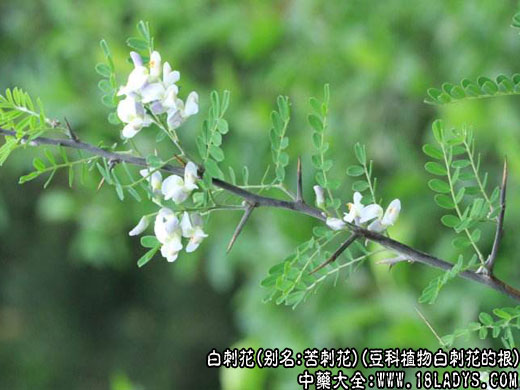

别名：苦刺花、白花刺、狼牙刺。
来源：为豆科植物白刺花的根。
植物形态：矮小灌木，高约1.2m。树皮灰褐色，多疣状突起；枝条棕色，近无毛，具锐刺。单数羽状复叶互生，小叶11～21枚，长到卵形，长7～12mm，宽2～7mm，先端微凹，有效刺尖，基部圆形，全缘，背面疏生平伏白毛。总状花序生于老枝顶，花6～12朵，白色或蓝白色；萼小，5齿；花冠长1.5cm。荚果3～6cm，串珠状，有长嘴。荚节3～5个。种子椭圆形。
生于山坡、路旁及灌丛中，分布于贵州及河北、陕西、甘肃、湖北、江苏、浙江、广西、云南、四川等地。
化学成分：叶含总生物碱约1%，槐果碱含量为0.4～0.53%。
性味功效：苦，寒。清热解毒，利尿消肿，凉血止血，杀虫。
临床运用：1、治鼻衄：白花刺根15g，水煎服。2、治热毒疮肿：鲜白花刺刺尖适量，捣绒敷患处。3、治便血：白花刺根、苦参各9g，水煎服。
用量：9～15g，外用适量。
治便血：白花刺根，苦参各9g，水煎服。